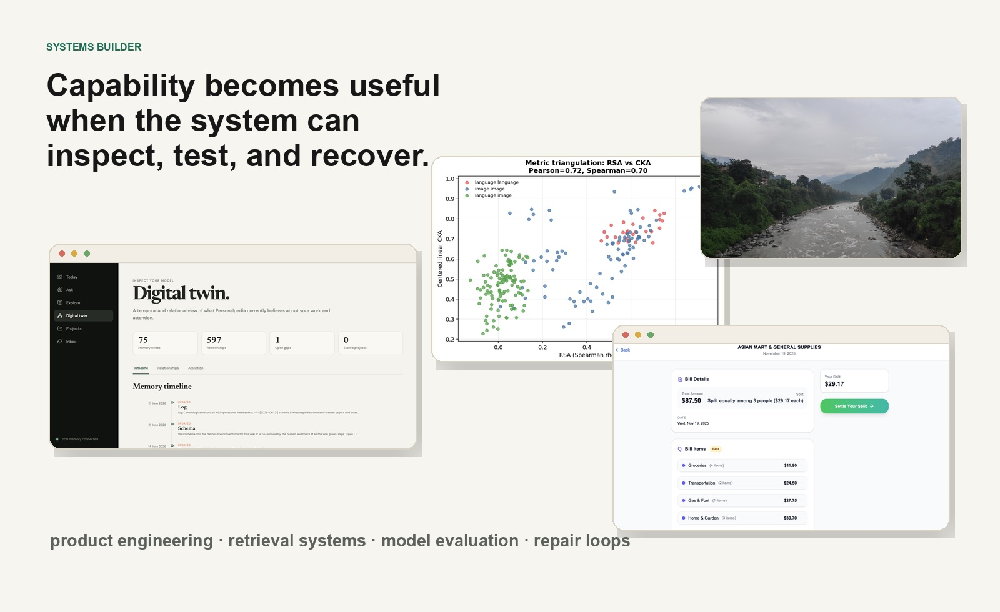

AI and evaluation
Model APIs, MCP, retrieval benchmarks, prompt controls, RSA, CKA, bootstrap inference, permutation tests, and trajectory inspection.
About
I am an applied AI engineer based in Sydney, working across Python, model evaluation, tool-using agents, retrieval systems, and production product engineering.

Engineering scope
I designed and deployed TribeBills across a FastAPI/PostgreSQL backend, Next.js web client, and native SwiftUI app. The AI path includes receipt extraction, constrained categorization, latency instrumentation, independent circuit breakers, and manual fallback.
I then built the Nepal Energy Wiki as a governed agent workflow with repository rules, retrieval benchmarks, source-integrity checks, and an audit trail. In parallel, Scale250 became a 25-model study with bootstrap, permutation, depth, prompt, and alternate-metric controls.
AI is most useful when it is placed inside a system that can inspect its inputs, recover from failure, preserve human judgment, and revise itself when the evidence changes.
Technical range
Python is the center of gravity; product surfaces and evaluation infrastructure extend around it.
Model APIs, MCP, retrieval benchmarks, prompt controls, RSA, CKA, bootstrap inference, permutation tests, and trajectory inspection.
Python, FastAPI, PostgreSQL, SQLAlchemy, Alembic, TypeScript, Next.js, SwiftUI, Docker, Linux, and production operations.
How I work
The implementation changes by domain; the questions used to shape it are consistent.
Architecture follows the actual bottleneck: social friction in a shared bill, provenance in civic knowledge, or measurement quality in a benchmark.
Model output remains editable, fallbacks stay available, and high-stakes claims retain a visible path back to their sources.
I prefer clear ownership and few moving parts: a shared API, static indices where possible, explicit manifests, and tooling that one person can debug.
Tests, audits, user behavior, and stronger experiments are allowed to change the design or conclusion.
I am continuing to develop the Nepal Energy Wiki, publish the Scale250 research, and turn agent failures into reproducible tests and evaluation cases.
What I am looking for
The most interesting work starts after a promising model result. Turning it into something useful requires data design, interfaces, evaluation, failure handling, deployment, and judgment about what should remain human.
I am drawn to technically ambitious teams working on applied AI systems, research engineering, developer tools, or products that require broad ownership and careful measurement.